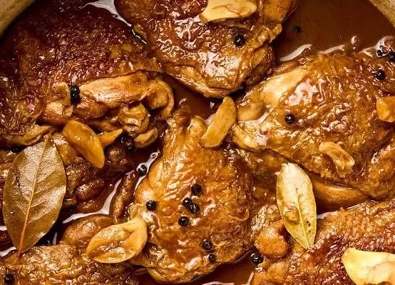

Odin Recipes
Adobo

Filipino dish mixed with various spices such as meat, garlic, soy sauce and vinegar.
Steps for cooking adobo
- Heat the Pan
- Clean the meat
- Slice them
- put oil in the pan
- put the chopped garlic
- put the meat after gisa
- put 1/2 of soy sauce and vinegar
- add water
- wait it to be cooked
- 20minutes... Finish product